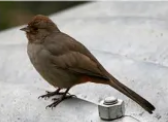
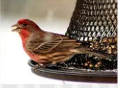
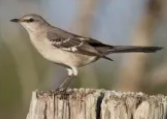
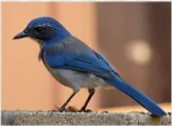
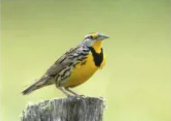
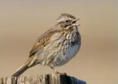

There are many different types of California Backyard Birds. Here are some different birds that you can sometimes find in your very own backyard.
For more information on birds, try going to Project FeederWatch.
|
 I'M A CALIFORNIA TOWHEE GLAMOUR BIRD I may be prompted by a tireless knocking at your window or car mirror. |
 I'M A HOUSE FINCH BIRD I build my nest in cavities, buildings, hanging plants, and other cup-shaped outdoor decorations. |
 I'M A NORTHERN MOCKINGBIRD My mimicking ability, as reflected by name means 'many-tongued mimic.' |
|
 I'M A SONG SPARROW BIRD I use melodious and fairly complex song to declare ownership of territory and to attract females. |
 I'M A WESTERN MEADOWLARK My buoyant, flutelike melody can brighten anyone's day. |
 I'M A WESTERN SCRUB JAYBIRD I am a fixture of dry shrublands, oak woodlands, and conspicuous visitors to backyards. |
The End.